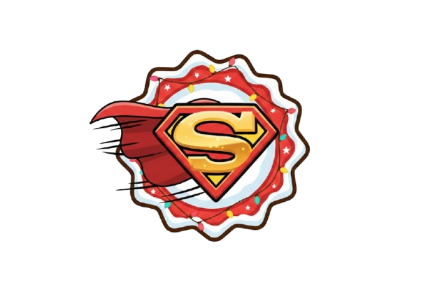
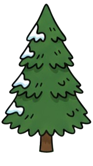

Die Legende der Power-Ups
Sammle diese magischen Gegenstände, um Eddi zu helfen:
Verdoppelt deine Punktzahl (kann mehrfach gesammelt werden).
Zieht Power-Ups magisch an (3 Ladungen).

Schenkt Eddi ein Extraleben (max. 1).

Eddi fliegt für kurze Zeit und ist unbesiegbar!

Vermeide diese Hindernisse, sonst verlierst du!